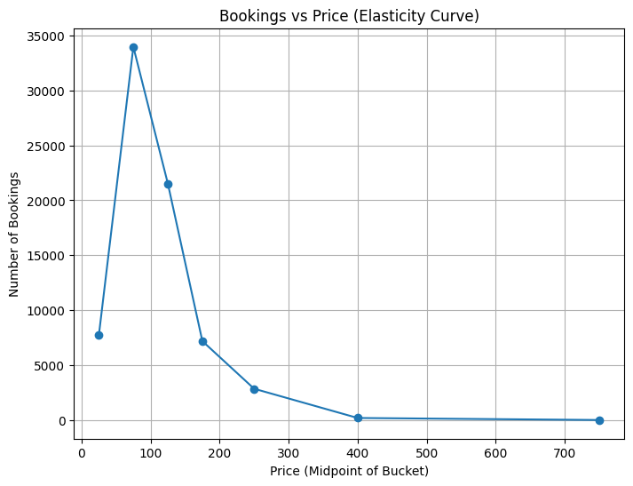

Code
# 1️⃣ Load Data
import pandas as pd
df = pd.read_csv('../data/raw/hotel_bookings.csv')
# Filter to completed bookings only (exclude cancellations)
df = df[df['is_canceled'] == 0]
df.head()5 rows × 32 columns
# 2️⃣ Aggregate Price & Demand
# Group by price buckets → example simple binning
df['price_bucket'] = pd.cut(df['adr'], bins=[0, 50, 100, 150, 200, 300, 500, 1000])
# Count bookings per price bucket
demand_by_price = df.groupby('price_bucket').size().reset_index(name='bookings')
demand_by_priceC:\Users\atima\AppData\Local\Temp\ipykernel_4156\1096299440.py:7: FutureWarning: The default of observed=False is deprecated and will be changed to True in a future version of pandas. Pass observed=False to retain current behavior or observed=True to adopt the future default and silence this warning.
demand_by_price = df.groupby('price_bucket').size().reset_index(name='bookings')# 3️⃣ Plot Demand vs Price
import matplotlib.pyplot as plt
# Midpoint of each bucket → simple estimate
demand_by_price['price_mid'] = demand_by_price['price_bucket'].apply(lambda x: x.mid)
plt.figure(figsize=(8,6))
plt.plot(demand_by_price['price_mid'], demand_by_price['bookings'], marker='o')
plt.title('Bookings vs Price (Elasticity Curve)')
plt.xlabel('Price (Midpoint of Bucket)')
plt.ylabel('Number of Bookings')
plt.grid()
plt.show()
# 4️⃣ Log-Log Regression (Elasticity Estimate)
import numpy as np
import statsmodels.api as sm
# Prepare log-log data
demand_by_price['price_mid'] = demand_by_price['price_mid'].astype(float)
X = np.log(demand_by_price['price_mid'])
y = np.log(demand_by_price['bookings'])
X = sm.add_constant(X) # add intercept
model = sm.OLS(y, X).fit()
print(model.summary())
# Elasticity ≈ slope coefficient → % change in demand per % change in price OLS Regression Results
==============================================================================
Dep. Variable: bookings R-squared: 0.598
Model: OLS Adj. R-squared: 0.518
Method: Least Squares F-statistic: 7.441
Date: Mon, 09 Jun 2025 Prob (F-statistic): 0.0414
Time: 01:51:40 Log-Likelihood: -14.821
No. Observations: 7 AIC: 33.64
Df Residuals: 5 BIC: 33.53
Df Model: 1
Covariance Type: nonrobust
==============================================================================
coef std err t P>|t| [0.025 0.975]
------------------------------------------------------------------------------
const 19.5084 4.513 4.323 0.008 7.909 31.108
price_mid -2.3678 0.868 -2.728 0.041 -4.599 -0.137
==============================================================================
Omnibus: nan Durbin-Watson: 1.033
Prob(Omnibus): nan Jarque-Bera (JB): 1.053
Skew: -0.709 Prob(JB): 0.591
Kurtosis: 1.734 Cond. No. 27.0
==============================================================================
Notes:
[1] Standard Errors assume that the covariance matrix of the errors is correctly specified.c:\GitHub\DynamicHotelPricingOptimization\venv\Lib\site-packages\statsmodels\stats\stattools.py:74: ValueWarning: omni_normtest is not valid with less than 8 observations; 7 samples were given.
warn("omni_normtest is not valid with less than 8 observations; %i "# 5️⃣ Visualize Fitted Elasticity Curve
y_pred = model.predict(X)
plt.figure(figsize=(8,6))
plt.scatter(np.log(demand_by_price['price_mid']), np.log(demand_by_price['bookings']), label='Observed')
plt.plot(np.log(demand_by_price['price_mid']), y_pred, color='red', label='Fitted Line')
plt.title('Log-Log Elasticity Model')
plt.xlabel('log(Price)')
plt.ylabel('log(Bookings)')
plt.legend()
plt.grid()
plt.show()